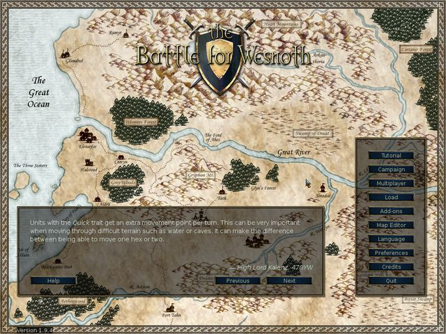
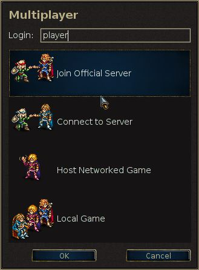
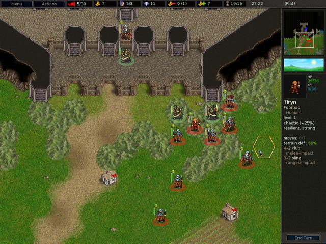
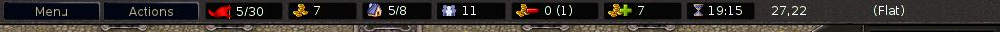
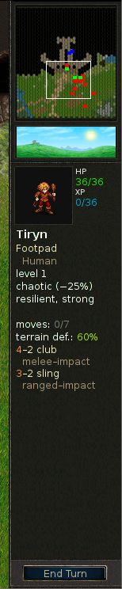
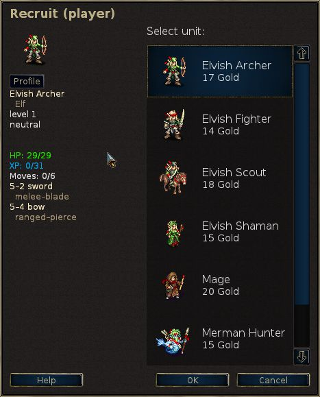

Table of Contents
List of Tables
- 2.1. Tombol-tombol kontrol umum dan kunci panas
- 2.2. Unit dan mengaktifkan tombol cepat tertentu
- 2.3. Papan tulis tombol cepat tertentu
- 2.4. Tombol cepat khusus multipemain
- 2.5. Berbagai tombol cepat
- 2.6. Berbagai tombol cepat
- 2.7. Kontrol-kontrol khusus Pandora dan tombol cepat
- 2.8. Saat pada hari itu dan kerusakan
- 2.9. Bonus pengalaman untuk membunuh atau memerangi musuh yang memiliki tingkat yang berbeda
- 2.10. Bola-bola
Pertempuran demi Wesnoth adalah permainan berbasis strategi dengan cerita khayalan.
Membangun pasukan yang sangat besar, secara bertahap melatih rekrutan mentah menjadi veteran berpengalaman. Dalam permainan berikutnya, panggil kembali prajurit terkuat anda dan bentuklah serombongan besar mematikan terhadap siapa tidak bisa melawan! Pilih unit dari kolam besar spesialis, dan memilih kekuatan dengan kemampuan untuk bertarung dengan baik pada daerah yang berbeda terhadap segala macam oposisi.
Wesnoth memiliki banyak kisah-kisah yang berbeda yang menunggu untuk dimainkan. Anda dapat melawan orc, mayat hidup, dan para bandit di barisan Kerajaan Wesnoth; berjuang bersama naga di puncak gunung yang tinggi, elf dalam bentangan hijau Hutan Aethen, dwarf di aula besar Knalga, atau bahkan Manusia Duyung di Teluk mutiara. Anda dapat berjuang untuk mendapatkan kembali takhta Wesnoth, atau menggunakan kekuatan mengerikan anda sebagai Mayat Hidup untuk mendominasi tanah manusia, atau memimpin suku mulia orc anda untuk kemenangan terhadap manusia yang berani merampas tanah anda.
Anda dapat memilih di antara lebih dari dua ratus jenis unit (infanteri, kavaleri, pemanah, dan penyihir hanya awalnya) dan tindakan memerangi mulai dari penyergapan kecil-unit untuk bentrokan tentara besar. Anda juga dapat menantang teman anda - atau orang asing - dan berjuang di pertempuran fantasi multi-player yang hebat sekali.
Pertempuran demi Wesnoth adalah perangkat lunak open source, dan sebuah komunitas yang berkembang dari sukarelawan yang bekerja sama untuk meningkatkan permainan. Anda dapat membuat unit kustom anda sendiri, menulis skenario sendiri, dan bahkan script kampanye besar-besaran. Pengguna merawat konten yang tersedia dari pengaya di server, dan yang terbaik dari itu dimasukkan ke dalam rilis resmi Pertempuran demi Wesnoth’.
Bagian yang dikenal dari Benua Besar, yang mana berada di Wesnoth, biasanya dibagi menjadi tiga bidang: Daerah Utara, yang umumnya tidak patuh pada hukum; Kerajaan Wesnoth yang kadang-kadang berprinsip, Elensefar; dan daerah kekuasaan dari para Elf bagian barat-daya di Hutan Aethen dan sekitarnya.
Kerajaan Wesnoth berada di tengah-tengah daratan ini. berbatasan dengan Sungai Besar di utara, Perbukitan Dulatus di timur dan selatan, tebing Aethenwood di bagian barat-daya, dan Lautan di sebelah barat. Elensefar, pernah menjadi propinsi Wesnoth, dibatasi oleh Sungai Besar di utara, dengan bebas menegaskan batas Wesnoth ke timur, Teluk Mutiara di selatan, dan lautan di barat.
Daerah Utara adalah negeri liar di utara Sungai Besar. Berbagai kelompok orc, dwarf, kaum barbar dan elf mendiami wilayah ini. Untuk bagian utara dan timur terletak hutan Lintanir, di mana kerajaan besar dari Elf Utara menjaga urusan misteriusnya sendiri .
Di atas tanah adalah tersebar desa-desa di mana anda dapat menyembuhkan pasukan anda dan mengumpulkan pendapatan yang dibutuhkan untuk mendukung tentara anda. Anda juga harus melintasi gunung dan sungai-sungai, menerobos hutan, perbukitan dan tundra, dan melintasi padang rumput terbuka. Dalam setiap bidang ini makhluk yang berbeda telah beradaptasi tinggal di sana dan dapat melakukan perjalanan lebih mudah dan bertarung lebih baik ketika mereka berada di daerah yang sudah lazim.
Dalam dunia Wesnoth ada tinggal manusia, elf, dwarf, orc, drake, saurian, manusia duyung, kobra, dan ras lainnya namun lebih tak dikenal dan menakjubkan. Dalam tanah terkutuk berjalan mayat hidup dan para hantu dan para momok; monster-monster bersembunyi di reruntuhan dan ruang bawah tanah dunia Wesnoth. Masing-masing telah disesuaikan dengan medan tertentu. Manusia terutama mendiami padang rumput sedang. Di perbukitan, pegunungan dan gua-gua bawah tanah adalah daerah orc dan dwarf yang paling menyukainya sebagai rumah. Di dalam hutan adalah kekuasaan tertinggi elf. Dalam lautan dan sungai duyung dan kobra mendominasi.
Untuk tujuan permainan, kelompok ras dibagi kedalam beberapa golongan, misalnya, orc sering bekerja sama dengan troll, dan elf atau dwarf dengan manusia. Beberapa golongan lain mencerminkan perpecahan di dalam masyarakat manusia — loyalis vs penjahat, misalnya. Pada sebagian besar kampanye, anda akan mengendalikan unit-unit yang mengambarkan golongan tunggal. Tapi kadang-kadang beberapa golongan membuat aliansi dengan golongan lain, sehingga anda mungkin menghadapi lebih dari satu golongan dalam skenario.
Ketika Wesnoth pertama dimulai ini akan menampilkan latar belakang awal dan kolom disebut tombol Menu Utama. Tombol hanya bekerja dengan mouse. Untuk tidak sabar, kami menyarankan anda: klik tombol"Bahasa" untuk mengatur bahasa anda; lalu klik tombol "Tutorial" untuk menjalankan tutorial; dan kemudian bermain kampanye,"Kisah Dua Saudara" dengan mengklik tombol "Kampanye" dan memilihnya dari daftar yang tersedia.

- Pelatihan
- Pelatihan adalah sebuah kenyataan, tapi dasar, permainan yang mengajarkan anda beberapa kontrol dasar yang dibutuhkan untuk bermain game. Menang atau kalah tidak penting di sini, tapi pelajarilah apa yang harus dilakukan. Klik tombol Pelatihan untuk bermain. Dalam Pelatihan anda berada dalam peran Pangeran Konrad atau putri Li’sar, belajar dari Tetua Penyihir Delfador — Perhatikan perintahnya atau dia akan mengubah anda menjadi kadal air.
- Kampanye
- Wesnoth terutama dirancang untuk bermain kampanye. Kampanye adalah serangkaian skenario terhubung. Klik tombol ini untuk memulai kampanye baru. Anda akan disajikan dengan suatu daftar kampanye yang tersedia pada komputer anda (lebih banyak dapat didownload jika anda mau). Pilih kampanye dan klik OK untuk memulai atau Batal untuk keluar. Setiap kampanye memiliki tingkat kesulitan: mudah, sedang (normal), dan sulit. Kami menyarankan sedang pada tingkat ini adalah menantang, tapi tidak sulit. Anda tidak dapat mengubah kesulitan selama masa kampanye. Jika Anda memiliki masalah serius berjuang melalui kesulitan mudah, panduan tentang Strategi Dasar pasti akan membantu anda. Setelah anda memilih kesulitan, anda akan mulai dengan skenario pertama kampanye.
- Multiplayer
- Klik tombol ini untuk bermain skenario tunggal terhadap satu atau lebih lawan. Anda dapat memainkan game melalui internet atau di komputer anda, melawan komputer atau lawan manusia. Bila Anda memilih tombol ini dialog akan muncul dan memungkinkan anda untuk memilih bagaimana anda ingin memainkan skenario. Untuk mempelajari lebih lanjut, lihat scenarios.
- Memuat
- Klik tombol ini untuk memuat permainan yang pernah disimpan sebelumnya. Anda akan ditampilkan dialog daftar game simpananan. Pilih permainannya dan klik Ok untuk memuat dan melanjutkan, atau Batal untuk kembali ke Menu Utama. Jika anda memilih permainan replay, Anda dapat mencentang kotak centang Replay. Permainan yang dimuat akan membuat semua bergerak dari awal saat anda menonton.
- Add-ons
- Klik tombol ini untuk memasukkan server konten dimana seluruh konten yang dibuat oleh pengguna normal menjadi tuan rumah. Di antara hal-hal yang tersedia ada banyak kampanye, era multiplayer (mendefinisikan kelompok untuk permainan multiplayer) dan peta multiplayer. Dengan tombol "Hapus Add-ons" anda dapat menghapusnya lagi setelah anda tidak ingin mereka lagi.
- Editor Peta
- Klik tombol ini untuk memulai Editor Peta dimana anda dapat membuat kustom peta untuk game multiplayer atau untuk membangun kampanye anda sendiri.
- Bahasa
- Klik tombol ini, pilih bahasa anda, dan klik OK untuk menggunakannya, atau Batal untuk melanjutkan dengan bahasa saat ini. Wesnoth Pertama kali dimulai, standarnya menggunakan Bahasa Inggris atau sistem lokal anda jika itu dapat ditentukan, tetapi sekali anda mengubahnya, permainan akan memulai dalam bahasa tersebut.
- Preferensi
- Klik di sini untuk mengubah pengaturan default.
- Kredit
- Klik tombol ini untuk daftar kontributor utama Wesnoth. Anda sering akan dapat menghubungi mereka secara real time pada irc.freenode.org:6667 on #wesnoth.
- Berhenti
- Klik tombol ini untuk menutup Wesnoth.
- Bantuan
- Klik tombol ini untuk terintegrasi dalam Sistem Bantuan permainan. Ini akan memberikan anda informasi tentang unit dan semua hal-hal lain yang relevan dengan permainan. Kebanyakan dari hal-hal tersebut disebutkan dalam buku pedoman ini.
- Berikutnya
- Klik tombol ini untuk membaca sedikit info berikutnya dari "Tome of Wesnoth".
- Sebelumnya
- Klik tombol ini untuk membaca sedikit info sebelumnya dari "Tome of Wesnoth".
Ada dua cara dasar untuk bermain Pertempuran demi Wesnoth:
- Memainkan suatu rangkaian skenario terhubung, yang dikenal sebagai kampanye, melawan komputer.
- Memainkan suatu skenario tunggal melawan komputer atau lawan manusia.
Kampanye adalah rangkaian pertempuran dengan alur cerita yang bersambung. kampanye khususnya memiliki sekitar 10-20 skenario. Keuntungan utama dengan kampanye adalah bahwa kampanye memungkinkan anda untuk mengembangkan tentara anda. Ketika anda menyelesaikan masing-masing skenario, unit yang tersisa pada akhirnya akan disimpan untuk anda untuk digunakan dalam skenario berikutnya. Jika anda memilih untuk tidak menggunakan unit sama sekali dalam skenario unit itu tetap dibawa ke skenario berikutnya, sehingga anda tidak kehilangan unit yang tidak’ anda gunakan.
Kampanye ini adalah bentuk utama di mana Wesnoth dimaksudkan untuk dimainkan, mungkin yang paling menyenangkan, dan merupakan cara yang disarankan bagi pemain baru untuk belajar permainan.
Sebuah skenario tunggal memakan waktu sekitar 30 menit sampai 2 jam untuk menyelesaikannya. Ini adalah cara tercepat untuk bermain, namun unit anda tidak disimpan dan anda tidak dapat menggunakan unit kampanye. Anda dapat memainkan skenario melawan komputer atau melawan pemain lain baik melalui internet atau di komputer anda. Skenario diakses melalui tombol "Multiplayer" pada menu utama.
Dalam permainan multiplayer umum bermain melawan pemain lain melalui internet (anda juga dapat menjalankan mereka di LAN anda jika anda memilikinya). Semua permainan ini terkoordinasi melalui server multiplayer Wesnoth. Multiplayer game bisa berlangsung dari 1 jam sampai 10 jam, tergantung pada berapa banyak pemain yang ada (dan ukuran peta). Waktu rata-rata adalah antara 3-7 jam. Permainan dapat disimpan dan dimuat sebanyak yang anda suka. Jadi, mungkin’ untuk beberapa pertandingan berakhir 1 atau 2 minggu, meskipun waktu bermain hanya beberapa jam. Anda tidak dapat membawa unit di multiplayer dari satu skenario ke skenario berikutnya, sehingga membangun kekuatan tentara’ anda hanya mungkin dalam skenario.
Ada beberapa pilihan yang mungkin anda dilengkapi dengannya saat mengklik di tombol "Multiplayer" :

Ini akan menjadi nama anda pada server multiplayer. Jika anda memiliki account pada Wesnoth forums, Anda dapat menggunakan username dan password yang sama untuk bergabung dengan server resmi. Sebuah kotak password akan muncul jika diperlukan password untuk nama pengguna saat ini. Anda tidak dapat menggunakan nama yang terdaftar tanpa password.
Pilihan ini menghubungkan anda langsung ke server resmi. Anda akan berakhir di lobi mana anda dapat membuat permainan anda seperti yang anda inginkan dan di mana banyak permainan sudah terbuka dan mungkin beberapa pemain sudah menunggu untuk bergabung dalam sebuah pertandingan baru.
Pilihan ini akan membuka kotak dialog yang memungkinkan anda untuk memasukkan alamat mesin untuk bergabung. Dalam dialog ini ada juga tombol "Lihat List" yang menampilkan daftar server resmi yang dapat digunakan sebagai cadangan jika server utama saat ini tidak tersedia.
Daftar lengkap resmi dan pengaturan pengguna server terdaftar di website ini: Multiplayer servers.
Anda juga dapat mencapai server host oleh pemain lain dengan pilihan menu. Jadi jika anda punya server berjalan di jaringan lokal anda, cukup masukkan alamat dan nomor port (default: 15000). Jika Anda misalnya ingin terhubung ke server yang berjalan pada mesin dengan alamat 192.168.0.10 dan port default, anda akan masuk dalam dialog ini: 192.168.0.10:15000
Untuk dapat memulai permainan multiplayer tanpa menggunakan server multiplayer eksternal, anda harus mulai server, yang biasanya bernama wesnothd, sendiri. Program ini dimulai secara otomatis di latar belakang ketika memilih pilihan ini. Ini akan dihentikan, setelah semua pemain meninggalkan server. Pemain lain harus dapat terhubung ke port anda 15000 menggunakan TCP untuk bermain dengan anda pada server anda. Jika anda berada di belakang firewall, anda mungkin perlu mengubah pengaturan firewall anda untuk membolehkan koneksi masuk ke port 15000, dan kirim firewall anda untuk meneruskan lalu lintas tersebut ke mesin hosting permainan. Anda tidak perlu melakukan perubahan firewall untuk bergabung permainan host pada server umum atau oleh orang lain.
Hal ini menciptakan sebuah permainan hanya berjalan pada komputer anda. Anda bisa menggunakannya sebagai permainan kursi panas di mana setiap orang bermain di komputer yang sama dengan bergiliran di hotseat. Permainan kursi panas akan memakan waktu sekitar waktu yang sama untuk bermain sebagai permainan yang dimainkan melalui Internet. Atau anda hanya dapat memainkan skenario terhadap lawan AI daripada pemain manusia. Ini bisa menjadi cara yang baik untuk menjadi akrab dengan berbagai peta yang digunakan untuk permainan multiplayer sebelum bermain melawan musuh yang nyata. Hal ini juga dapat digunakan sebagai cara sederhana untuk mengeksplorasi kemampuan unit dari kelompok yang berbeda dengan memilih kelompok yang akan anda mainkan dan kelompok yang lawan anda mainkan dalam permainan ini. Tentu saja, anda juga dapat mencampur keduanya dalam satu pertandingan. Artinya, bermain bersama dalam permainan dengan teman melawan lawan AI.

Terlepas dari apakah anda memainkan skenario atau kampanye, tata letak dasar layar permainan adalah sama. Mayoritas layar diisi dengan sebuah peta yang menunjukkan semua tindakan yang terjadi dalam permainan. Disekitar peta adalah berbagai elemen yang memberikan informasi yang berguna tentang permainan dan dijelaskan lebih rinci di bawah.

Di bagian atas layar dari kiri ke kanan adalah item berikut:
- Tombol Menu
- Tombol Tindakan
- Penghitung Giliran (jumlah giliran saat ini/giliran maksimum)
- Emas anda
- Desa (desa anda / jumlah total seluruh desa)
- Total unit anda
- Pemasukan anda
- Penghasilan anda
- Waktu sekarang atau waktu tersisa (sewaktu permainan multiplayer)
- Posisi heks saat ini (x-koordinat, y-koordinat)
- Pertahanan dan pergerakan dari unit yang sedang dipilih pada heks ditandai
- Jenis heks saat ini

Di ujung kanan layar dari atas ke bawah adalah:
- Peta penuh, terskala
- Indikator waktu
- Profil unit untuk unit terakhir terpilih
- Tombol Selesai Giliran
Ketika anda pertama kali memulai sebuah skenario atau kampanye anda hanya akan memiliki beberapa unit di peta. Salah satunya akan menjadi komandan anda (diidentifikasi oleh ikon kecil mahkota emas). komandan anda biasanya ditempatkan di kastil pada heks khusus yang disebut benteng. Setiap kali komandan anda berada di benteng (tidak hanya benteng anda sendiri, tetapi juga benteng dari istana musuh yang anda rebut) dan anda punya cukup emas, anda dapat merekrut unit untuk tentara anda. Dalam skenario selanjutnya anda dapat memanggil kembali unit berpengalaman yang selamat dari skenario sebelumnya. Dari sini, anda dapat mulai membangun tentara untuk menaklukkan musuh.
Hal pertama yang mungkin anda ingin lakukan adalah merekrut unit pertama
anda. Tekan Ctrl+r (atau klik kanan pada heks benteng
kosong dan pilih "Rekrut") dan anda akan dapat merekrut unit dari daftar
semua unit yang tersedia untuk anda. Setiap merekrut diletakkan di heks
benteng kosong. Setelah anda telah memenuhi benteng, anda tidak dapat
merekrut unit lagi sampai unit-unit berangkat. Komandan lawan anda’
juga ditempatkan di benteng dan akan mulai dengan merekrut
pasukannya — jadi janga’n membuang-buang waktu
melihat pemandangan, ada’ pertempuran yang harus dimenangkan.
Pada akhir setiap skenario yang sukses, semua pasukan anda yang tersisa secara otomatis disimpan. Pada awal skenario berikutnya anda dapat memanggil kembali mereka dengan cara yang mirip dengan merekrut. Pasukan yang dipanggil kembali sering lebih berpengalaman dari rekrutan baru dan biasanya merupakan pilihan yang lebih baik.
Semua jenis permainan menggunakan prajurit yang sama, yang disebut unit. Setiap unit dikenali berdasarkan Ras, Level, dan Golongan. Setiap unit memiliki kekuatan dan kelemahan, berdasarkan Daya tahan mereka terhadap, daerah , dan Level saat itu. Keterangan lengkap ada di dalam bantuan permainan.
Seperti pasukan anda memperoleh pengalaman pertempuran, mereka akan belajar lebih banyak keterampilan dan menjadi lebih kuat. Mereka juga akan mati dalam pertempuran, sehingga anda’ harus merekrut dan mengingat kembali lebih banyak kalau itu terjadi. Tapi pilihlah dengan bijak, masing-masing memiliki kekuatan dan kelemahan yang dengan cepat dapat dimanfaatkan lawan licik.
Perhatikan dengan hati-hati kotak Tujuan yang muncul di awal masing-masing skenario. Biasanya anda akan mencapai kemenangan dengan membunuh semua pemimpin musuh, dan hanya bisa dikalahkan bila pemimpin anda terbunuh. Tapi skenario mungkin memiliki tujuan kemenangan lain — menggerakkan pemimpin anda ke titik yang ditunjuk, misalnya, atau menyelamatkan seseorang, atau memecahkan teka-teki, atau bertahan dari pengepungan hingga jumlah giliran tertentu berlalu.
Ketika Anda memenangkan sebuah skenario, peta akan berubah menjadi abu-abu dan tombol Selesai Giliran akan berubah menjadi Akhir Skenario. Anda sekarang dapat melakukan hal-hal seperti mengubah pilihan simpanan anda atau (jika Anda berada dalam permainan multiplayer) chatting dengan pemain lain sebelum menekan tombol tersebut untuk berikutnya.
Tentara anda tidak berperang dengan gratis. Anda butuh biaya emas untuk merekrut unit dan emas untuk memelihara mereka. Anda memulai masing-masing skenario dengan emas dibawa dari skenario sebelumnya (meskipun masing-masing skenario memastikan anda memiliki setidaknya jumlah minimal emas untuk memulai jika anda tida’k membawa lebih dari cukup emas dari skenario sebelumnya) dan dapat memperoleh lebih banyak dengan menyelesaikan tujuan skenario dengan cepat dan selama skenario, dengan mengendalikan desa-desa. Setiap desa yang anda kendalikan akan memberikan dua buah emas pendapatan per giliran. Ketika anda pertama kali memulai skenario itu biasanya bermanfaat untuk mendapatkan kendali sebanyak mungkin desa yang dapat anda pastikan anda memiliki pendapatan yang cukup untuk berperang. Anda dapat melihat emas saat ini dan penghasilan di bagian atas layar seperti yang dijelaskan pada bagian layar permainan.
Pada awal masing-masing skenario, keadaan permainan biasanya disimpan. Jika anda kalah, Anda dapat memuatnya kembali dan mencobanya lagi. Setelah anda berhasil, anda akan diminta lagi untuk menyimpan skenario berikutnya dan memainkannya. Jika anda harus berhenti bermain selama skenario, anda dapat menyimpan giliran anda dan memuatnya kembali suatu saat. Hanya ingatlah, seorang pemain Pertempuran demi Wesnoth yang baik tidak menyimpan selama skenario. Namun, kebanyakan pemula cenderung melakukannya lebih sering.
Ini adalah tombol kontrol default tersebut. Susunan kunci mungkin berbeda tergantung pada platform yang digunakan. Misalnya anda akan sering harus menggunakan tombol perintah dari pada tombol kontrol bila anda menggunakan MacOSX. Anda dapat mengubah hotkeys yang paling sesuai dengan selera anda menggunakan menu Pilihan.
Table 2.1. Tombol-tombol kontrol umum dan kunci panas
| F1 | Menu Bantuan Pertempuran demi Wesnoth |
| Tombol panah | Gulir |
| Klik kiri | Pilih unit, gerakan unit |
| Klik kanan | Menu berhubungan, membatalkan tindakan |
| Klik Tengah | Menempatkan di tengah-tengah lokasi pointer |
| Keluar | Keluar permainan, menu keluar, membatalkan pesan |
| Ctrl+s | Simpan permainan |
| Ctrl+o | Memuat permainan |
| Ctrl+p | Pergi ke menu Preferensi |
| Ctrl+q | Keluar permainan |
| Ctrl+f | Toggle modus layar penuh / mode window |
| Ctrl+Alt+m | Toggle mematikan suara permainan |
| + | Perbesar |
| - | Perkecil |
| 0 | Memasang lagi ke default zoom |
| Ctrl+e | Beralih lonjong |
| Ctrl+g | Toggle grid |
| Ctrl+a | Toggle modus permainan dipercepat |
| Menahan Shift | Beralih antara modus permainan dipercepat dan normal ketika ditekan (sementara!) |
| Ctrl+j | Tampilkan tujuan skenario |
| s | Tampilkan statistik |
| Alt+s | Tampilkan tabel status |
| Alt+u | Tampilkan daftar unit |
| l | Pindah ke unit pemimpin |
| Shift+s | Update selubung sekarang |
Table 2.2. Unit dan mengaktifkan tombol cepat tertentu
| Ctrl-r | Merekrut unit |
| Ctrl+Alt+r | Mengulangi merekrut unit terakhir |
| Alt+r | Memanggil kembali unit |
| Ctrl+n | Ubah nama unit |
| d | Tampilkan deskripsi dari unit yang sedang dipilih |
| t | Melanjutkan pergerakan unit tersela |
| u | Batalkan gerakan terakhir (hanya gerakan deterministik yang dapat dibatalkan) |
| r | Mengulangi gerakan |
| n | Siklus melalui unit yang masih bisa bergerak |
| Shift+n | Siklus melalui unit yang masih bisa bergerak, dalam urutan terbalik |
| Ctrl+v | Tampilkan pergerakan musuh (di mana musuh bisa melangkah giliran selanjutnya) |
| Ctrl+b | Tampilkan pergerakan potensial musuh, jika unit anda tidak berada di peta |
| 1-7 | Tunjukkan seberapa jauh unit yang dipilih saat ini bisa bergerak di banyak giliran |
| Spasi | Mengakhiri gerakan unit dan siklus unit ke unit berikutnya yang masih bisa bergerak |
| Shift+Spasi | Membuat unit yang sedang dipilih dalam posisi bertahan (akhiri gerakannya) |
| Ctrl+Spasi | Akhiri giliran pemain’ ini |
Table 2.3. Papan tulis tombol cepat tertentu
| p | Setel mode perencanaan |
| y | Melaksanakan aksi yang direncanakan |
| h | Hapus aksi yang direncanakan |
| Halaman Bawah | Pindahkan tindakan ke bawah antrian |
| Halaman Atas | Pindahkan tindakan ke atas antrian |
| Ctrl+y | Jalankan semua tindakan |
| i | Misalkan mati |
Table 2.4. Tombol cepat khusus multipemain
| m | Pesan ke pemain lain (dalam multiplayer) |
| Ctrl+m | Pesan ke sekutu anda (dalam multiplayer) |
| Alt+m | Mengirim pesan kepada semua orang dalam permainan (dalam multiplayer) |
| Alt+c | Lihat chat log |
| Ctrl+x | Hapus pesan-pesan |
Table 2.5. Berbagai tombol cepat
| Ctrl+c | Hapus layar label |
| / | Cari (menemukan label atau unit dengan nama) |
| Alt+l | Pasang label teks ke daerah hex |
| Ctrl+l | Mengatur label tim |
| : | Command mode |
| F5 | Segarkan Cache |
| Shift+c | Buat Unit (Debug!) |
| f | Jalankan rumus AI |
Beberapa kunci MacOSX membutuhkan lebih daripada mengganti Ctrl dengan Cmd. Berikut adalah daftar kunci itu:
Table 2.6. Berbagai tombol cepat
| Cmd+w | Keluar permainan |
| Cmd+, | Pergi ke menu Preferensi |
| Ctrl+F5 | Segarkan Cache |
| Pilihan+Spasi | Akhiri giliran pemain’ ini |
Beberapa tombol cepat diubah sedikit untuk membuat lebih baik menggunakan kontrol-kontrol yang disediakan oleh Pandora. Jika anda menggunakan Pandora, kunci-kunci ini berbeda dari daftar di atas:
Table 2.7. Kontrol-kontrol khusus Pandora dan tombol cepat
| D-Pad | Gulir |
| Tombol Game A | Merekrut unit |
| Tombol Game B | Batalkan gerakan terakhir (hanya gerakan deterministik yang dapat dibatalkan) |
| Tombol Game X | Siklus melalui unit yang masih bisa bergerak |
| Tombol Game Y | Memanggil kembali unit |
| Alt+ Tombol Game Y | Pindahkan tindakan ke bawah antrian |
| Alt+Tombol Game X | Pindahkan tindakan ke atas antrian |
Each side is given some amount of gold to begin with, and receives 2 gold pieces per turn, plus 2 more gold pieces for every village that side controls. In a campaign, starting gold is a minimum amount defined by the scenario, which is typically lower as the difficulty level increases. In addition you often get a percentage of gold to carry over from the last scenario played. The exact percentage depends on the scenario and is usually displayed as part of the scenario objectives.

Penggunaan utama emas adalah untuk membangun tentara anda dengan merekrut unit baru atau memanggil kembali unit dari skenario sebelumnya dalam kampanye. Unit dapat direkrut atau dipanggil kembali saat pemimpin berada di sebuah benteng yang setidaknya memiliki satu heks benteng kosong.
- Klik kanan di heks benteng kosong dan pilih Rekrut untuk merekrut unit baru dari daftar yang disajikan. Biaya untuk Merekrut tergantung pada unit, tapi biasanya antara 10 dan 20 emas.
- Klik kanan di heks kastil kosong dan pilih Memanggil kembali untuk memanggil kembali unit dari skenario sebelumnya. Memanggil kembali memerlukan biaya 20 keping emas per unit. Lihat recalling units untuk informasi lebih lanjut.
Setiap unit juga memiliki biaya pemeliharaan. Biaya pemeliharaan umumnya sama dengan tingkat unit, kecuali unit tersebut memiliki sifat "Loyal" (see below). Unit yang awalnya tidak direkrut — yaitu pemimpin atau orang-orang yang bergabung secara sukarela — biasanya memiliki sifat Loyal. Pemeliharaan hanya dibayarkan jika total biaya pemeliharaan unit’ adalah lebih besar dari jumlah desa yang di kontrol. Pemeliharaan yang dibayarkan adalah selisih antara jumlah desa dan biaya pemeliharaan.
Jadi, rumus untuk menghitung pendapatan per gilirannya adalah
2 + desa - maksimum (0, pemeliharaan - desa)
di mana perawatan adalah sama dengan jumlah tingkat dari semua unit non-setia.
Jika biaya pemeliharaan lebih besar dari jumlah desa+2 kemudian pihak tersebut mulai kehilangan emas, jika sama, tidak ada pendapatan yang diperoleh atau hilang.
Pertempuran demi Wesnoth memiliki ratusan jenis unit yang dicirikan oleh kayanya kumpulan statistik. Selain itu, setiap unit dapat memiliki traits khusus yang membuat mereka agak berbeda dari unit lain dari jenis yang sama. Akhirnya, desainer kampanye dapat menambahkan unit unik untuk kampanye mereka untuk lebih memperluas pilihan yang tersedia untuk pemain.
Statistik dasar untuk unit termasuk hit poinnya (HP), jumlah titik gerakan unit itu, dan senjata yang dapat unit itu gunakan dan kerusakan yang mereka lakukan. Selain itu, unit memiliki karakteristik lainnya, seperti alignment dan kemampuan khusus, yang dijelaskan lebih rinci di bawah.
Setiap unit memiliki penjajaran: baik, netral, brutal atau liminal. Penjajaran mempengaruhi bagaimana unit tampil di waktu yang berbeda. Unit-unit netral tidak terpengaruh oleh waktu. Unit-unit baik lebih banyak melukai pada siang hari dan kurang melukai pada malam hari. Unit-unit brutal melakukan lebih banyak kerusakan di malam hari dan kurang di siang hari. Unit-unit liminal sedikit melukai baik di malam maupun di siang hari.
Kedua fase "siang" dan "malam" dibedakan menjadi Pagi, Sore dan Pengamatan Pertama, Pengamatan Kedua, oleh posisi matahari dan bulan dalam waktu sehari grafik.
Tabel berikut menunjukkan pengaruh waktu yang berbeda pada kerusakan yang ditangani oleh unit-unit baik, brutal dan liminal:
Table 2.8. Saat pada hari itu dan kerusakan
| Giliran | Gambar | Fase-hari | Baik | Brutal | Liminal |
|---|---|---|---|---|---|
| 1 |

| Fajar | -- | -- | -- |
| 2 |

| Hari (pagi) | +25% | −25% | −25% |
| 3 |

| Hari (sore) | +25% | −25% | −25% |
| 4 |

| Senja | -- | -- | -- |
| 5 |

| Malam (jam pertama) | −25% | +25% | −25% |
| 6 |

| Malam (jam kedua) | −25% | +25% | −25% |
| Khusus |

| Bawah tanah | −25% | +25% | −25% |
Perlu diketahui bahwa beberapa skenario terjadi di bawah tanah, di mana terus-menerus malam!
Sebagai contoh: mempertimbangkan perkelahian antara unit Baik dan unit
Brutal ketika keduanya memiliki kerusakan dasar 12. Saat fajar dan senja,
keduanya akan melakukan 12 poin dari kerusakan jika mereka memukul. Selama
Pagi atau Siang, unit Baik akan melakukan (12 \* 1.25)
atau 15 poin, sementara unit Brutal akan melakukan (12 \*
0.75) atau 9 poin. Selama Jam Jaga Pertama atau Kedua, unit baik
akan melakukan 9 poin dibandingkan dengan unit Brutal’ 15.
Jika unit Netral sepadan bertempur, selalu akan menyebabkan 12 poin kerusakan tanpa menghiraukan waktu.
Unit memiliki sifat yang mencerminkan aspek karakter mereka. Sifat ditunjuk secara acak untuk unit ketika mereka diciptakan. Hampir semua unit menerima dua sifat.
Sifat-sifat yang paling mungkin untuk unit adalah sebagai berikut:
- Cerdas
- Unit Cerdas membutuhkan pengalaman 20% lebih sedikit dari biasanya untuk naik tingkat (Troll tidak mendapatkan sifat ini). Unit cerdas sangat berguna pada awal kampanye karena mereka dapat naik ke tingkat yang lebih tinggi lebih cepat. Kemudian dalam kampanye unit cerdas tidak begitu berguna karena Setelah Maksimum Tingkat Kemajuan (SMTK) adalah tidak begitu berarti perubahan karena kenaikan level. Jika anda memiliki banyak unit yang berlevel maximum anda mungkin ingin untuk memanggil kembali unit dengan sifat yang lebih berguna.
- Cepat
- Unit Cepat punya 1 titik gerakan ekstra, namun 5% lebih sedikit HP dari biasanya. Cepat adalah sifat yang paling kelihatan, khususnya dalam unit yang bergerak lambat seperti troll atau infanteri berat. Unit memiliki sifat Cepat sering meningkat pesat mobilitas di medan kasar, yang penting untuk dipertimbangkan saat menyebarkan tentara anda. Selain itu, unit Cepat tidak’ sekuat unit tanpa sifat ini dan selanjutnya kurang baik di mempertahankan posisi diperebutkan.
- Tabah
- Unit tabah memiliki 4 HP ditambah 1 HP per level lebih banyak dari biasanya. Unit tabah bisa bermanfaat pada semua tahap kampanye, dan ini adalah sifat yang berguna untuk semua unit. Seringkali, tabah sangat membantu sebagai sifat ketika itu terjadi di sebuah unit yang memiliki beberapa kombinasi darah rendah, pertahanan yang baik, atau kekuatan melawan yang tinggi. Unit tabah sangat berguna untuk memegang posisi strategis melawan musuh.
- Kuat
- Unit yang kuat melakukan 1 kerusakan lebih banyak untuk setiap serangan sukses dalam pertempuran jarak dekat, dan memiliki 1 lagi HP. Sesekali berguna untuk setiap unit tempur-dekat, Kuat adalah yang paling efektif untuk unit yang memiliki jumlah ayunan tinggi seperti Petarung Elf. Unit yang kuat dapat sangat berguna ketika sedikit kerusakan ekstra adalah semua yang diperlukan untuk mengubah pukulan merusak menjadi pukulan membunuh.
Ada juga beberapa sifat yang ditentukan hanya untuk unit tertentu atau hanya untuk unit dari ras tertentu. Ini adalah:
- Tangkas
- Unit tangkas melukai 1 lebih banyak untuk setiap serangan sukses dalam pertarungan jarak jauh. Tangkas adalah sifat yang hanya dimiliki oleh Elf. Orang-orang Elf terkenal untuk anugerah luar biasa mereka, dan ketrampilan hebat mereka dengan busur. Beberapa, bagaimanapun, adalah berbakat dengan bakat alami yang melebihi saudara-saudara mereka. Elf ini mengakibatkan angka tambahan dari kerusakan dengan masing-masing panah.
- Sehat
- Terkenal karena vitalitas mereka, beberapa dwarf lebih kokoh dari yang lain dan bisa beristirahat menyembuhkan bahkan ketika berjalan atau bertempur. Unit sehat memiliki 1 HP ditambah 1 HP per tingkat lebih banyak daripada biasanya dan saat istirahat biasa menyembuhkan 2 HP setelah tiap giliran tanpa menghiraukan.
- Tak Kenal Takut
- Tidak menderita dari bonus serangan negatif selama waktu yang tidak menguntungkan dari hari (Infanteri Berat, Necrophage, Troll, Mayat Berjalan).
Ada juga beberapa sifat yang tidak diberikan secara acak. Sifat-sifat ini dapat diberikan oleh perancang skenario atau selalu diberikan berdasarkan jenis unit:
- Setia
- Unit setia tidak’ dikenakan biaya pemeliharaan. Hampir semua unit dikenakan biaya pemeliharaan pada akhir setiap giliran, yang sebanding dengan tingkat mereka. Unit setia tidak dikenakan biaya ini. Selama kampanye, beberapa unit bisa memilih untuk bergabung dengan pasukan’ pemain atas kemauannya sendiri. Unit ini ditandai dengan sifat Setia. Meskipun mereka mungkin meminta pembayaran untuk dipanggil kembali, mereka tidak pernah menimbulkan biaya pemeliharaan. Hal ini dapat membuat mereka tak ternilai selama kampanye yang panjang, ketika pasokan emas sedikit. Sifat ini tidak pernah diberikan kepada unit yang direkrut, sehingga mungkin tidak bijaksana untuk memecat unit ini atau untuk mengirim mereka ke sebuah kematian bodoh.
- Mayat Hidup
- Unit mayat hidup kebal terhadap racun, juga menghisap dan mewabah tidak melukai’ mereka. Unit mayat hidup umumnya memiliki Undead sebagai satu-satunya ciri. Karena unit mayat hidup adalah tubuh orang mati, dibangkitkan untuk bertempur kembali, racun tidak berpengaruh pada mereka. Hal ini dapat membuat mereka berharga dalam menghadapi musuh yang menggunakan racun bersama dengan serangan mereka.
- Mekanis
- Unit Mekanikal tidak hidup dan dengan demikian kebal terhadap racun, juga menghisap dan mewabah tidak bekerja pada mereka. Unit Mekanikal umumnya memiliki Mechanical sebagai satu-satunya ciri.
Beberapa unit memiliki serangan khusus. Tercantum di bawah ini:
- Kelicikan
- Ketika digunakan ofensif, serangan ini menyebabkan kerusakan ganda jika ada musuh dari target di sisi berlawanan dari target, dan unit itu tidak dijadikan tidak mampu (misalnya ketakutan).
- Pengamuk
- Apakah digunakan ofensif atau membela diri, serangan ini menekan pertempuran sampai salah satu pejuang terbunuh, atau 30 putaran serangan telah terjadi.
- Serangan
- Ketika digunakan dengan ofensif, serangan ini menyebabkan kerusakan ganda pada target. Hal ini juga menyebabkan unit ini untuk menerima kerusakan serangan balasan dua kali lipat dari target’.
- Menguras
- Unit menguras ini menghisap kesehatan dari unit hidup, menyembuhkan diri sendiri dari setengah jumlah kerusakan yang ia timbulkan (dibulatkan ke bawah).
- Firststrike
- Unit Firststrike selalu memukul duluan dengan serangan ini, bahkan jika mereka dalam posisi bertahan.
- Magis
- Serangan Magis selalu memiliki 70% kesempatan untuk mengenai tanpa menghiraukan dari kemampuan defensif unit yang diserang.
- Jago Tembak
- Ketika digunakan dengan ofensif, serangan ini selalu memiliki paling sedikit 60% kesempatan untuk mengenai.
- Mewabah
- Ketika unit tewas oleh serangan Mewabah, unit itu berubah menjadi Mayat Berjalan di pihak yang sama sebagai unit dengan serangan Mewabah. Ini tidak bekerja’ pada Mayat Hidup atau unit di desa.
- Racun
- Serangan ini meracuni target. Unit keracunan kehilangan 8 HP setiap giliran sampai mereka disembuhkan atau hanya memiliki 1 HP. Racun tidak bisa, dengan sendirinya, membunuh unit.
- Lambat
- Serangan ini memperlambat target sampai gilirannya berakhir. Lambat membagi dua kerusakan yang disebabkan oleh serangan dan gerakan merugikan unit melambat menjadi dua kali lipat. Sebuah unit yang diperlambat akan menampilkan ikon bekicot di informasi sidebarnya ketika ia dipilih.
- Membatu
- Serangan ini membatukan target, merubahnya menjadi batu. Unit yang telah membatu tidak bisa bergerak atau menyerang.
- Berkerumun
- Banyak serangan ini menurun saat unit terluka. Jumlah serangan sebanding dengan % HP / HP maximum yang dimiliki unit. Sebagai contoh unit dengan 3/4 darah maksimum ini akan mendapat 3/4 jumlah serangan.
Beberapa unit memiliki kemampuan yang baik secara langsung mempengaruhi unit lain, atau memiliki efek pada bagaimana berinteraksi dengan unit-unit lainnya. kemampuan ini tercantum di bawah ini:
- Penyergapan
- Unit ini dapat bersembunyi di hutan, dan tetap tidak terdeteksi oleh musuhnya. Unit musuh tidak dapat melihat unit ini ketika ia di dalam hutan, kecuali jika mereka memiliki unit di sebelahnya. Setiap unit musuh yang pertama kali menemukan unit ini langsung kehilangan semua sisa pergerakannya.
- Penyembunyian
- Unit ini dapat bersembunyi di desa (dengan pengecualian desa air), dan tetap tidak terdeteksi oleh musuhnya, kecuali oleh mereka yang berdiri di sampingnya. Unit musuh tidak dapat melihat unit ini ketika sedang di sebuah desa, kecuali jika mereka memiliki unit di sebelahnya. Setiap unit musuh yang pertama kali menemukan unit ini langsung kehilangan semua sisa pergerakannya.
- Mengobati
- Sebuah unit yang dapat mengobati sekutu keracunan, meskipun sekutu tidak akan menerima tambahan penyembuhan pada giliran disembuhkan dari racun.
- Menyembuhkan +4
- Memungkinkan unit untuk menyembuhkan unit ramah berdekatan pada awal tiap giliran. Unit yang dirawat oleh penyembuh ini dapat disembuhkan sampai 4 HP per giliran, atau menghentikan efek racun saat giliran itu. Sebuah unit keracunan tidak dapat disembuhkan dari racun dengan penyembuh ini, dan harus mencari perawatan di desa atau unit yang dapat menyembuhkan.
- Menyembuhkan +8
- Unit ini mengkombinasikan herbal dengan sihir untuk menyembuhkan unit lebih cepat dari biasanya di medan perang. Unit yang dirawat oleh penyembuh ini dapat menyembuhkan sampai dengan 8 HP per giliran, atau menghentikan efek racun saat giliran itu. Sebuah unit keracunan tidak dapat disembuhkan dari racun dengan penyembuh ini, dan harus mencari perawatan dari desa atau unit yang dapat menyembuhkan.
- Menerangi
- Unit ini menerangi daerah sekitarnya, membuat unit baik bertarung lebih baik, dan unit brutal bertarung lebih buruk. Setiap unit bersebelahan dengan unit ini akan berjuang seolah-olah itu senja saat malam, dan seolah-olah siang hari ketika senja.
- Kepemimpinan
- Unit ini dapat memimpin unit ramah yang berada sebelahnya, membuat mereka bertarung lebih baik. unit ramah berdekatan dari tingkat yang lebih rendah akan melakukan lebih banyak kerusakan dalam pertempuran. Ketika sebuah unit berdekatan, dari tingkat yang lebih rendah, dan di pihak yang sama unit dengan Kepemimpinan bertarung, serangannya 25% lebih merusak kali perbedaan tingkat mereka.
- Nightstalk
- Unit ini jadi tak terlihat pada malam hari. Unit musuh tidak dapat melihat unit ini pada malam hari, kecuali jika mereka memiliki unit di sebelahnya. Setiap unit musuh yang pertama kali menemukan unit ini langsung kehilangan semua sisa pergerakannya.
- Memulihkan
- Unit ini akan menyembuhkan dirinya sendiri 8 darah per per giliran. Jika ia diracun, ia akan menghilangkan racun daripada menyembuhkan.
- Skirmisher
- Unit ini terampil dalam bergerak melewati musuh dengan cepat, dan mengabaikan semua Zona Kendali musuh.
- Tabah
- Daya tahan unit ini adalah dua kali lipat, sampai maksimal 50%, ketika bertahan. Tidak terpengaruh pada sifat mudah kena serang.
- Menyelam
- Unit ini dapat bersembunyi di air dalam, dan tetap tidak terdeteksi oleh musuhnya. Unit musuh tidak dapat melihat unit ini ketika sedang di air dalam, kecuali jika mereka memiliki unit di sebelahnya. Setiap unit musuh yang pertama kali menemukan unit ini langsung kehilangan semua sisa pergerakannya.
- Teleportasi
- Unit ini bisa teleportasi di antara dua desa bersahabat menggunakan salah satu langkahnya.
Unit diberikan pengalaman setiap bertempur. Setelah mendapat cukup pengalaman, mereka akan naik level dan menjadi lebih kuat. Jumlah pengalaman yang diperoleh tergantung pada tingkat unit musuh dan hasil pertempuran: jika sebuah unit membunuh lawan, ia menerima poin pengalaman 8 per tingkat musuh (4 jika musuh adalah level 0), sedangkan unit yang bertahan pertempuran tanpa membunuh lawan-lawan mereka diberikan 1 poin pengalaman per tingkat musuh. Dengan kata lain:
Table 2.9. Bonus pengalaman untuk membunuh atau memerangi musuh yang memiliki tingkat yang berbeda
| tingkat musuh | bonus membunuh | bonus pertempuran |
|---|---|---|
| 0 | 4 | 0 |
| 1 | 8 | 1 |
| 2 | 16 | 2 |
| 3 | 24 | 3 |
| 4 | 32 | 4 |
| 5 | 40 | 5 |
| 6 | 48 | 6 |
Setelah anda menyelesaikan skenario, semua unit yang masih hidup akan tersedia untuk dipanggil kembali dalam skenario berikutnya. Anda tidak dapat menggerakan atau menyerang dengan unit ini pada giliran anda merekrut atau memanggil kembali unit itu. Sebuah unit yang Dipanggil kembali tetap menguasai Tingkat sebelumnya, Poin Pengalaman, (terkadang) setiap item sihir yang diperoleh, dan akan tiba dengan penuh darah.
Mengklik pada unit mengidentifikasi semua tempat yang dapat dilaluinya pada
giliran saat ini dengan peredupan heks yang tak terjangkau (menekan tombol
angka 2-7 akan mengidentifikasi heks tambahan yang dapat dicapai dalam
jumlah giliran tersebut dengan cara yang sama). Dalam modus ini, menggerakan
kursor di atas heks akan mengidentifikasi jalur yang dilewati unit anda ke
arah heks sebaik informasi tambahan tentang bonus defensif unit anda pada
heks itu dan, jika akan mengambil lebih dari satu gilirannya, jumlah giliran
itu akan menentukan unit anda tiba. Jika anda tidak ingin memindahkan unit
modus ini dapat dibatalkan dengan memilih unit yang berbeda (dengan mengklik
pada unit baru atau menggunakan kunci n or
N ) atau dengan klik kanan (Perintah-klik pada Mac) di
mana saja di peta. orbs di bagian atas bar
energi’ unit yang menyediakan cara cepat untuk melihat unit anda telah
pindah atau dapat bergerak lebih lanjut dalam gilirannya saat ini.
Jika anda memutuskan untuk memindahkan unit yang dipilih, klik pada heks anda ingin pindah ke dan unit anda akan bergerak menuju ruang tersebut. Jika anda memilih tujuan yang berada di luar jangkauan pada gilirannya saat ini, unit akan bergerak sejauh ia dapat di giliran saat ini dan masukkan goto-mode. Dalam goto-mode unit anda akan terus bergerak menuju tujuan berikutnya secara bergiliran. Anda dapat dengan mudah membatalkan goto gerakan pada awal giliran berikutnya. Anda juga dapat mengubah tujuan’ unit dengan memilih unit tersebut dan memilih tujuan baru atau mengklik unit lagi untuk membatalkan goto.
Pindah ke sebuah desa yang netral atau dimiliki oleh musuh akan merubah status kepemilikannya dan mengakhiri gerakan anda untuk unit itu.
Hampir semua unit memberikan suatu Zona Kendali yang mempengaruhi heks capaian unit anda dan jalan yang unit anda butuhkan. Pembatasan ini secara otomatis tercermin baik dalam jalan yang ditampilkan untuk unit anda dan heks yang dapat dilalui unit anda pada gilirannya saat ini.
Zona Kendali sebuah unit meluas ke enam heks berbatasan langsung dengan unit, dan unit yang pindah ke suatu zona kendali musuh terpaksa berhenti. Unit dengan kemampuan skirmisher mengabaikan zona kendali musuh dan mampu bergerak melalui mereka secara bebas tanpa dipaksa untuk berhenti. Unit tingkat 0 dianggap terlalu lemah untuk menghasilkan zona kendali dan semua unit mampu bergerak melalui heks sekitar unit musuh tingkat 0 secara bebas.
Di atas bar energi ditampilkan di samping setiap unit anda adalah sebuah bola. bola ini adalah:
Table 2.10. Bola-bola
| Bola | Gambar | Deskripsi |
|---|---|---|
| Hijau |

| Jika anda mengendalikan unit dan unit ini belum bergerak’ pada gilirannya |
| Kuning |

| Jika anda mengontrol unit dan telah pindah pada gilirannya, tapi masih bisa bergerak atau menyerang |
| Merah |

| Jika anda mengontrol unit, tetapi unit itu tidak bisa lagi bergerak atau menyerang, atau pemain mengakhiri giliran unit’ |
| Biru |

| Jika unit ini adalah sekutu anda yang tidak anda kontrol |
| - |

| Unit musuh tidak memiliki bola di atas batang energi mereka |
Di bawah setiap unit biasanya akan ada sebuah elips berwarna atau alas. Warna mengidentifikasikan timnya; dalam permainan kampanye, warna pemain manusia berwarna merah. Warna tim juga akan muncul di bagian pakaia’n unit, atau mungkin pada lambang perisai.
Biasanya elips akan menjadi piringan padat. Pada unit tingkat 0, anda akan melihat sebuah elips yang memiliki bentuk yang merekah. Hal ini menunjukkan bahwa unit itu tidak memiliki Zona Kendali.
Beberapa kampanye menggunakan dasar berbentuk bintang untuk menunjukkan pemimpin dan pahlawan (unit yang khusus dan entah bagaimana misalnya tidak diizinkan untuk mati dalam skenario); lainnya menggunakan ikon mahkota perak di atas bar energi untuk menandai pahlawan. Masih ada yang lain yang tidak memiliki indikator pahlawan khusus sama sekali. Yang (jika ada) digunakan adalah pilihan gaya yang ditentukan oleh desainer kampanye.
Jika anda bergerak ke sebelah unit musuh, anda dapat menyerangnya. Klik pada unit anda yang dekat kepada unit musuh, dan klik pada musuh yang anda ingin serang – hal ini akan memunculkan jendela yang menyajikan pilihan lebih lanjut untuk bertarung. Setiap unit memiliki satu atau lebih senjata yang dapat digunakan untuk menyerang. Beberapa senjata, seperti pedang, adalah senjata jarak dekat, dan beberapa senjata, seperti busur panah, adalah senjata jarak jauh.
Jika anda menyerang dengan senjata jarak dekat, musuh yang anda serang akan dapat membalas dengan senjata jarak dekatnya. Jika anda menyerang dengan senjata jarak jauh, musuh akan dapat membalas dengan senjata jarak jauhnya. Jika musuh tidak memiliki senjata dari jenis yang sama seperti yang anda gunakan untuk menyerang, mereka tidak akan dapat membalas dan melakukan kerusakan apapun kepada anda dalam perkelahian itu.
Berbagai jenis serangan yang berbeda menyebabkan sejumlah kerusakan yang berbeda, dan sejumlah serangan dapat dilakukan dengan senjata masing-masing. Sebagai contoh, seorang Elf Petarung menyebabkan 5 poin kerusakan dengan pedangnya setiap kali menyerang, dan dapat menyerang 4 pukulan dengan pedang dalam satu serangan. Hal ini ditulis sebagai 5-4, berarti 5 kerusakan per serangan, dan 4 kali serang.
Setiap unit memiliki kemungkinan dilukai berdasarkan daerah yang di masukinya. Sebagai contoh, unit di istana dan desa memiliki kesempatan yang lebih rendah dilukai, dan Elf di hutan memiliki kesempatan rendah dilukai. Untuk melihat rating pembelaan unit’ (yaitu kesempatan untuk tidak terkena serangan) di daerah, klik unit, dan kemudian mouse pada daerah and’a tertarik, dan rating pertahanan akan ditampilkan sebagai nilai persentase di papan status, juga ditunjukkan di atas heks daerah.
Anda dapat memperoleh informasi tambahan, termasuk kesempatan bahwa penyerang dan pembela akan dibunuh, dengan mengklik tombol "Perhitungan Kerusakan" di jendela pertempuran.
- Pedang: Senjata dengan bermata tajam, digunakan untuk memotong serpihan daging dari musuh. Contoh: pisau belati, pedang, pedang, cakar drake.
- Tajam: Senjata dengan titik yang tajam dan baik menangani tangkai panjang atau rudal, digunakan untuk melubangi tubuh musuh’ dan kerusakan organ internal. Contoh: tombak Ksatria atau tombak infanteri, panah.
- Peremuk: Senjata tidak memiliki titik yang tajam atau bermata, tapi cukup berat untuk mematahkan tulang musuh’. Contoh: gada, tongkat,tinju Troll.
- Dingin: Senjata berdasarkan dingin atau rudal es. Contoh: gelombang dingin Seorang Dark Adepts’.
- Api: Senjata api untuk memanggang musuh seperti ayam. Contoh: Napas api drake’.
- Misterius: Sebuah serangan yang menghilangkan sihir yang menghidupkan zombie, hantu, dan makhluk mayat hidup lainnya dan roh. Contoh: Sebuah serangan sihir penyihir’ putih.
Setiap unit kurang lebih rentan terhadap jenis serangan yang berbeda. 6 angka dalam unit deskripsi menunjukkan kekuatan dan kelemahan unit terhadap 6 tipe serangan. Angka perlawanan yang positif menunjukkan bahwa unit akan menderita kerusakan kurang dari jenis serangan itu. Angka perlawanan negatif menunjukkan bahwa unit ini terutama rentan terhadap jenis serangan ini.
Contoh: sisik Drake melindungi mereka dari sebagian besar jenis serangan kecuali dari senjata tajam dan senjata dingin. Unit Kavaleri Manusia umumnya terlindung dengan baik kecuali dari serangan yang menusuk titik lemah mereka. Mayat Hidup sangat tahan terhadap pisau dan senjata menusuk tetapi sangat rentan terhadap serangan peremuk dan serangan misterius.
Menggunakan jenis serangan terbaik terhadap unit musuh secara substansial akan meningkatkan peluang anda untuk membunuh mereka.
Sebuah unit dapat disembuhkan maksimum 8 darah per giliran. Sebuah unit yang tidak bergerak atau bertempur saat gilirannya adalah istirahat dan akan pulih kembali 2 darah. Darah pulih kembali melalui istirahat ditambahkan di atas darah pulih kembali melalui penyembuhan sehingga memungkinkan untuk unit untuk memulihkan sampai total 10 darah per giliran.
Ada dua cara dasar untuk unit yang akan disembuhkan:
- Menunggu di sebuah desa. Unit ini akan terobati 8 darah setiap giliran.
- Berdekatan dengan unit dengan kemampuan menyembuhkan. Jumlah darah disembuhkan ditentukan dalam deskripsi kemampuan’ unit. Hal ini selalu menyembuhkan +4 atau menyembuhkan +8.
Troll dan Wose memiliki kemampuan untuk menyembuhkan dirinya sendiri secara alami melalui regenerasi. Mereka akan menyembuhkan 8 poin tiap giliran jika mereka terluka. Perhatikan bahwa karena semua unit hanya dapat menyembuhkan maksimum 8 poin per giliran, Troll dan Wose tidak mendapat keuntungan tambahan dari berada di desa atau di samping unit penyembuhan.
Beberapa serangan dapat mengakibatkan keracunan pada unit anda. Bila ini terjadi unit teracuni akan terkena 8 kerusakan tiap giliran sampai sembuh. Racun dapat disembuhkan dengan menunggu di desa atau berada di sebelah unit dengan kemampuan menyembuhkan. Unit dengan kemampuan heals hanya dapat mencegah racun dari menyebabkan kerusakan yang giliran itu, tidak menyembuhkan. Ketika racun disembuhkan unit tidak mendapatkan atau kehilangan darah pada gilirannya karena penyembuhan/keracunan. Unit tidak dapat disembuhkan secara normal sampai sembuh dari keracunan. Istirahat masih diperbolehkan, meskipun tidak akan secara substansial mengurangi efek’ racun itu.
Beberapa petunjuk lainnya tentang penyembuhan:
- Sebuah unit mungkin memerlukan beberapa giliran untuk sembuh sepenuhnya.
- Penyembuh (Dukun Elf, Druid Elf, Elf Shyde, Penyihir Putih, Penyihir Cahaya, Paladin) menyembuhkan semua unit terluka di sekitar mereka, sehingga anda dapat merawat unit dekat dengan pertempuran tanpa kehilangan mereka.
- Penyembuh tidak menyembuhkan unit musuh.
- Penyembuh tidak bisa menyembuhkan dirinya sendiri, tetapi melihat titik berikutnya.
- Gunakan penyembuh anda berpasangan, sehingga mereka dapat menyembuhkan satu sama lain jika diperlukan.
- Beberapa penyembuh dari berbagai pihak yang bersekutu dapat menyembuhkan unit yang sama dan mempercepat penyembuhan.
- Troll dan Wose tidak dapat meregenerasi unit lainnya.
- Troll dan Wose menyembuhkan diri mereka sendiri dari racun seperti yang dilakukan sebuah desa.
Prinsip-prinsip dasar tempur dan tips berikut ini dimaksudkan untuk membantu memulai karir anda sebagai veteran pertempuran Wesnoth. Contoh-contoh konkret kecil agak terikat dengan kampanye "Pewaris Takhta".
Jangan mengirim unit terluka ke sebuah kematian yang meyakinkan. Setelah unit kehilangan lebih dari setengah darahnya (HP), anda seharusnya serius mempertimbangkan memundurkanya demi keselamatan dan menempatkannya di sebuah desa untuk penyembuhan atau memberikan dia perawatan seorang penyembuh (seperti Dukun Elf atau Penyihir Putih). Penyembuh sangat berguna!
Ini adalah untuk alasan praktis: unit terluka parah tidak bisa bertahan atau membunuh musuh. Selama serangan dan serangan balasan, paling sering akan binasa. Selanjutnya, dengan mengirimkannya ke kematian yang meyakinkan, poin pengalaman yang didapatkannya (XP) hilang. Merekrut pengganti mungkin mustahil karena pemimpinnya tidak berada di benteng atau karena dana menipis. Bahkan jika anda dapat merekrut pengganti, rekrutan ini sangat sering jauh dari bagian depan pertempuran. Jadi janga’n sia-siakan unit anda.
Bagaimana anda menjaga unit terluka? Mereka yang terjaga dengan lebih baik bila berada di luar jangkaua’n musuh. Tidak ada musuh yang dapat menyerang mereka jika musuh bahkan tidak bisa mendekati mereka. Bagian berikutnya tentang zona Kendali (ZOC) menunjukkan bagaimana untuk membatasi geraka’n musuh.
Pada menu Tindakan, anda dapat memilih "Tampilkan Gerakan Musuh" untuk menyorot semua heks yang mungkin musuh anda benar-benar dapat bergerak kesitu. Ini akan memperhitungkan zona kendali anda. Dengan demikian anda dapat memeriksa unit anda yang dekat dengan kematian, yang berada di belakang, memang tidak bisa diserang musuh karena tidak bisa bergerak di dekatnya.
Ketika tentara anda bertemu musuh, anda mungkin ingin mencoba untuk menjadi yang pertama untuk menyerang. Jadi cobalah untuk mengakhiri gerakan anda di luar jangkauan gerak dari tentara musuh. Dia tidak dapat menyerang namun kemungkinan besar akan mendekat ke dalam jangkauan gerakan anda.
Setiap unit tingkat 1 atau lebih tinggi memelihara sebuah zona kendali (ZOC) mencakup seluruh 6 heks tetangga. Ini berarti bahwa setelah bergerak musuh menjadi salah satu dari enam ubin tetangga, itu dipaksa untuk menghentikan dan fase gerakannya berakhir (hanya musuh dengan kemampuan langka skirmisher yang dapat mengabaikan ini).
Karena ZOC, musuh tidak mungkin menyelip di antara dua unit yang sejajar pada jalur utara-selatan atau diagonal dan memiliki tepat 1 atau 2 heks antara mereka. Dengan menggabungkan pasangan ini menjadi dinding yang panjang atau menggunakan mereka dalam arah yang berbeda, anda dapat mencegah musuh mencapai unit terluka di belakang. Dia harus mengalahkan unit yang menentukan ZOC terlebih dahulu. Jika musuh hampir tidak dapat mencapainya, bahkan unit tunggal dapat melindungi wilayah kecil di belakangnya sendiri.
Dengan membariskan banyak unit berbatasan langsung atau dengan paling banyak 1 ruang heks antara mereka, anda dapat membangun sebuah garis pertahanan yang kuat. Perhatikan bahwa, karena Wesnoth menggunakan heks, sebuah "barisan" timur ke barat bukan merupakan garis lurus tetapi kurva zig-zag. Garis utara selatan dan Diagonal-diagonal adalah garis yang "nyata".
Datang dari satu sisi, musuh bisa menyerang setiap satu unit anda di barisan dengan hanya 2 unit pada waktunya. Sebagai aturan praktis, unit yang sehat tanpa kelemahan tertentu dapat menahan serangan dari dua unit musuh normal tingkat yang sama atau lebih rendah tanpa terbunuh.
Sayangnya, barisan anda sering membengkok untuk membentuk baji atau sesuai medan. Pada titik-titik sudut ini, 3 unit musuh bisa menyerang. Ini juga terjadi di ujung barisan jika barisan terlalu pendek. Gunakan unit dengan darah tinggi pada daerah yang tepat atau dengan daya tahan yang tepat untuk menahan titik-titik lemah ini. Ini kemungkinan besar akan dibunuh, jadi gunakan unit yang tidak memiliki atau memiliki sedikit poin pengalaman (XP) untuk tujuan ini.
Membariskan pasukan anda juga mencegah musuh dari mengepung salah satu dari unit anda. Untuk alasan ZOC, sebuah unit dengan satu musuh di belakangnya dan satu lagi di depan akan terjebak.
Ketika sebuah unit di garis depan rusak berat Anda dapat memindahkan dia dengan aman di belakang garis pertahanan anda. Untuk mempertahankan garis, anda kemungkinan besar akan harus menggantikannya dengan pasukan cadangan, jadi tempatkan beberapa unit di belakang garis depan. Jika anda memiliki penyembuh, unit rusak di baris kedua akan dengan cepat sembuh.
Perlu diketahui bahwa unit anda dapat melewati heks berisi pasukan sendiri.
Cobalah untuk memposisikan pasukan anda sehingga mereka menyerang dari heks dengan pertahanan tinggi terhadap musuh dalam heks dengan daerah pertahanan rendah. Dengan cara itu, serangan balasan’ musuh akan cenderung lebih sedikit melakukan kerusakan.
Misalnya, Anda mungkin memposisikan elf anda hanya dalam tepi hutan sehingga orc menyerang harus berdiri di atas padang rumput sementara elf anda menikmati pertahanan hutan yang tinggi.
Maju dan menyerang tentu saja bagian paling menarik dari jalan anda menuju kemenangan. Membunuh atau melemahkan musuh di jalan anda dan memajukan garis pertahanan anda ke depan. Hal ini dapat menjadi rumit seperti musuh mendapatkan serangan kembali pada gilirannya.
Sering kali, anda akan melemparkan beberapa unit kepada unit tunggal musuh untuk menghabisinya, tetapi ini membuat garis pertahanan anda yang kini sebagian rusak. Mungkin ini tidak masala’h karena anda berada di luar jangkauan unit musuh berikutnya. Mungkin hal ini karena anda hanya berhasil melemahkan musuh yang sangat kuat dan giliran berikutnya, ia akan membalas. Mungkin Penunggang Kuda dapat memberikan pukulan membunuh.
Menyerang pertama adalah suatu keuntungan karena memungkinkan anda memilih unit yang akan dihadapi. Manfaatkan kelemahan musuh: misalnya serangan jarak jauh anda melawan musuh tanpa senjata jarak jauh. Manfaatkan kelemahan seperti kerentanan Penunggang Kuda’ untuk senjata menusuk. Tapi ingat bahwa mereka dapat menyerang kembali pada gilirannya mereka, sehingga anda mungkin memiliki kelemahan yang dapat dimanfaatkan musuh.
Misalnya, Penunggang Kuda dapat mempertahankan barisan melawan Orc Muda dan Troll Muda dengan sangat baik karena mereka memiliki daya tahan terhadap pisau dan tumbukan. Tapi Penunggang Kuda anda mungkin cukup cepat roboh ditangan Pemanah Orc dan Goblin Penombak.
Ini biasanya melunasi jika anda dengan pasti bisa membunuh (atau hampir membunuh) unit yang dihadapi. Jika anda tidak yakin menghabiskan musuh dalam satu giliran, baik memastikan bahwa unit anda dapat bertahan serangan kembali atau memutuskan bahwa anda’ bersedia kehilangan unit itu. Untuk menahan serangan’ musuh giliran berikutnya, sering bijaksana untuk menyerang pada jarak yang memungkinkan musuh untuk melakukan kerusakan yang paling sedikit kepada anda, dan bukannya memilih maksimum kerusakan yang diharapkan musuh.
Secara khusus, gunakan senjata jarak jauh anda jika musuh tidak memiliki serangan jarak jauh. Pilihan default dari komputer’ hanya mencari kerusakan yang paling anda bisa tangani, sehingga dengan menggunakannya sering akan mengakibatkan unit anda menerima kerusakan lebih dari yang dibutuhkan.
Ingat bahwa unit Baik seperti manusia bertarung lebih baik pada siang hari, unit Brutal seperti orc atau mayat hidup bertarung lebih baik di malam hari, dan unit Liminal bertarung paling baik selama senjakala. Idealnya anda ingin pertama kali bertemu musuh ketika kamu kuat dan/atau ia lemah. Ketika musuh memiliki waktu-waktu kuatnya, sering kali menguntungkan untuk memperkuat barisan anda dan mempertahankan posisi defensif yang menguntungkan. Ketika waktu lemah musuh akan timbul, kemajuan anda akan mendesak seterusnya.
Misalnya, elf mungkin bertahan di hutan selama serangan gencar tiap malam orc dan maju saat matahari terbit. Anda bahkan dapat mencatat bahwa komputer AI dengan aktif memundurkan orcnya di siang hari.
Selama kampanye, penting bahwa anda membangun sebuah kekuatan berpengalaman. Skenario berikutnya akan menganggap anda memiliki unit tingkat 2 dan 3 tersedia untuk dipanggil kembali.
Unit anda mendapatkan poin pengalaman yang paling banyak (XP) dari membunuh unit musuh (8XP per tingkat unit dibunuh). Karena itu, sering masuk akal untuk memiliki unit anda yang bertingkat lebih tinggi melemahkan musuh, namun menyerahkan membunuh dengan unit yang lebih membutuhkan XP. Penyembuh khususnya sering lemah dalam pertempuran dan sering perlu untuk mencuri membunuh dengan cara ini untuk menaikkan tingkat.
Pada awalnya (ketika anda mungkin tidak memiliki unit tingkat tinggi), cobalah untuk memberikan yang paling membunuh untuk segelintir kecil dari unit anda. Ini akan cepat membuat mereka untuk menjadi unit Tingkat 2, dan mereka kemudian dapat melindungi yang lain.
Janga’n lalai untuk mendapatkan pengalaman pemimpin anda. Anda perlu membuatnya aman, tetapi jika anda memanjakan dia terlalu banyak ia akan terlalu rendah tingkatnya untuk bertahan hidup pada skenario yang akan datang.
Ingat, ide permainan adalah untuk bersenang-senang! Berikut adalah beberapa rekomendasi dari tim pengembangan tentang cara untuk mendapatkan kesenangan yang paling menyenangkan dari permainan:
- Pertimbangkan bermain kampanye pada tingkat kesulitan "Sedang" , terutama jika anda memiliki pengalaman sebelumnya dengan permainan strategi. Kami merasa anda’ akan merasakan permainan jauh lebih memuaskan.
- Janga’n terlalu banyak berkeringat ketika anda kehilangan beberapa unit. Kampanye ini dirancang untuk mengakomodasi pemain kehilangan beberapa unit di sepanjang jalan.
- Jangan menyalahgunakan penyimpanan permainan. Dulu, Wesnoth hanya diperbolehkan menyimpan permainan pada akhir skenario. Penyimpanan di Pertengahan-skenario ditambahkan sebagai kemudahan untuk digunakan jika anda harus melanjutkan permainan di hari lain, atau untuk melindungi terhadap kecelakaan. Kami tidak menyarankan pemuatan pertengahan simpanan skenario permainan berulang-ulang karena Penyihir Putih anda tetap tewas. Belajarlah untuk melindungi Penyihir Putih anda, dan memperhitungkan risiko! Yang merupakan bagian dari strategi.
- Jika anda harus memuat permainan yang disimpan, kami sarankan anda memulai kembali ke awal skenario, sehingga anda memilih strategi baru yang lebih baik, bukan hanya menemukan nomor acak yang menguntungkan anda.
- Tapi ingat, tujuannya adalah untuk bersenang-senang! Anda mungkin memiliki rasa yang berbeda dari para pengembang, begitu juga apa yang paling anda nikmati! Jika anda menikmati pemuatan penyimpanan game setiap kali anda membuat kesalahan, mencari permainan sempurna di mana anda tidak pernah kehilangan unit, dengan segala cara, silahkan!
- Pertama, bacalah tujuan-tujuan skenario. Kadang-kadang anda tidak harus membunuh pemimpin-pemimpin musuh; melainkan sudah cukup bahwa anda bertahan untuk sejumlah giliran tertentu, atau mengambil suatu objek tertentu
- Lihatlah peta: medan, posisi pemimpin anda dan pemimpin lain(s).
- Kemudian, mulai merekrut unit. Unit murah berguna untuk merendam gelombang pertama serangan’ musuh; unit berpengalaman kemudian dapat dibawa sebagai pendukung. Unit cepat dapat digunakan sebagai pengintai, untuk menjelajahi peta dan dengan cepat menaklukkan desa-desa.
- Cobalah untuk merebut dan mengendalikan sebanyak mungkin desa untuk mempertahankan emas masuk
- Tetaplah membentuk unit dalam kumpulan sehingga musuh tidak dapat menyerang dari banyak sisi, dan sehingga anda dapat melebihi jumlah setiap unit musuh. Tempatkan unit anda dalam suatu barisan sehingga musuh tidak dapat menyerang salah satu unit anda dari lebih dari dua sisi.
- Unit yang berbeda memiliki kekuatan dan kelemahan yang berbeda tergantung pada daerah dan kepada siapa mereka menyerang; klik kanan pada unit dan pilih "Deskripsi Unit" untuk mempelajari lebih lanjut.
- Anda dapat menggunakan unit tingkat yang lebih rendah sebagai serdadu umpan meriam, untuk memperlambat musuh. Umpamanya anda dapat menggunakannya untuk memblokir musuh mencapai unit penting anda.
- Anda dapat menyebabkan kerusakan pada musuh dengan unit berpengalaman dan kemudian menyelesaikannya dengan unit tingkat yang lebih rendah — untuk memberi mereka lebih banyak pengalaman (dan akhirnya membuat mereka naik ke tingkat berikutnya).
- Bila anda memiliki Penyihir Putih (kenaikan dari Penyihir) atau Druid (kenaikan dari Dukun), taruh di tengah lingkaran unit untuk menyembuhkan mereka ketika mereka bergerak melewati peta (Dukun dapat melakukan ini juga, tapi tidak terlalu baik) .
- Kehilangan unit diharapkan, bahkan unit berpengalaman.
Waktu dalam hari yang benar-benar penting:
- Unit baik melakukan lebih banyak kerusakan pada siang hari dan kurang merusak pada malam hari
- Unit brutal berbuat lebih merusak pada malam hari dan kurang merusak pada siang hari
- ingat untuk selalu memeriksa waktu hari di sisi kanan layar. Rencanakan lebih dulu — pikirkan tentang apa yang akan terjadi’ pada giliran berikutnya seperti halnya pada giliran ini.
- Beberapa unit tahan atau rentan terhadap berbagai jenis serangan. Unit Mounted lemah vs serangan menusuk. Api dan serangan misterius menghancurkan mayat hidup. Untuk melihat berapa banyak unit menahan jenis serangan, klik kanan pada unit, pilih "Deskripsi Unit", kemudian pilih "Resistansi". Ini akan menunjukkan bagaimana daya tahan unit terhadap berbagai jenis serangan.
Suatu bagian penting dari kesuksesan di Pertempuran demi Wesnoth adalah menjaga kesehatan unit anda. Ketika unit anda menerima kerusakan anda dapat menyembuhkan mereka dengan memindahkan mereka ke desa-desa atau di samping unit khusus penyembuhan (misalnya Dukun Elf dan Penyihir Putih). Beberapa unit lain yang akan anda jumpai, seperti Troll, memiliki kemampuan untuk menyembuhkan diri secara alami.
- Unit berpengalaman diperlukan untuk dengan cepat membunuh komandan musuh, dan untuk menghindari kehilangan banyak unit.
- Semakin cepat anda menang skenario, semakin banyak anda mendapatkan emas; anda akan mendapatkan emas lebih banyak dari menang lebih awal daripada menguasai semua desa di peta’ untuk sisa giliran.
- Membunuh semua pemimpin musuh biasanya memberi kemenangan seketika.
- Setelah membantai beberapa skenario (di mana anda menerima banyak banyak siksaan) biasanya ada "ruangan bernapas" skenario-skenario di mana anda lebih dapat dengan mudah mendapatkan sedikit emas dan pengalaman (meningkatkan level unit-unit)
- Units berpengalaman membutuhkan biaya pemeliharaan yang lebih tinggi dari pada unit yang tingkatnya lebih rendah (1 gp per tingkat), terkecuali unit setia.